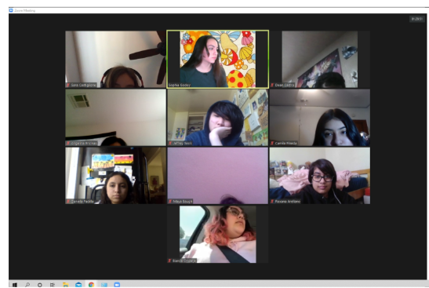
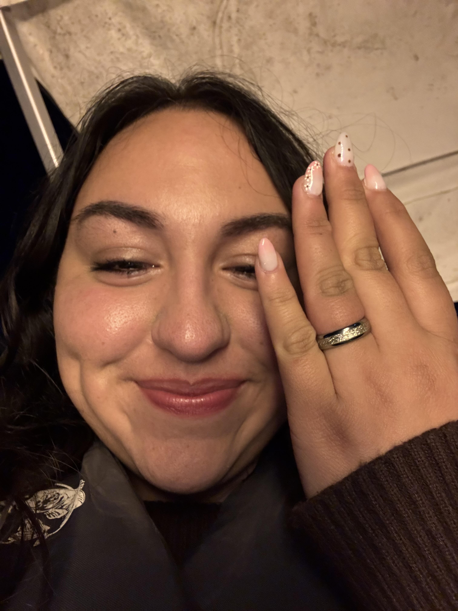

How We Met
I met Ethan during my sophomore year of high school, when our classes were on Zoom because of the COVID-19 pandemic. I wanted to lead a club, so I started an anime club on campus. We got to know each other through conversations, and little by little, we grew closer. After plenty of challenges along the way (*cough*), we started dating on December 3, 2021.
Our first date was a trip to the beach after school let out early. I went behind my parents’ backs, and that day became the start of so many memories.

The Little Things
For almost a year after we started dating, I was only allowed to go on dates with Ethan from 9 a.m. to 2 p.m. I had to be home by 2, or my dad would get furious. Eventually, we tested my dad’s limits, and within two years, we could hang out from 9 a.m. to 7 p.m.
When Ethan got his first car, he’d pick me up every Saturday right on time—or even 15 minutes early. Somehow, I’d always come out late. We started by going to the park, then began going to the mall and sometimes watching movies. As the years went by, we seemed to become adults all of a sudden. He got his first job as a tutor, and I started a small business.
Little by little, our dates became more exciting. We could drive farther, see new places, and try new things together. He never fell asleep, slept through his alarm, or canceled on me. :>
These days, we rot in bed together, and it still feels like home. It feels like so much time has passed, but somehow, it doesn’t.

Growing Together
Ethan has seen me at my best and at my worst. He saw me fail my driver’s permit test seven times, then helped me learn how to drive. He saw me struggle in math back in highschool, and helped me understand and overcome it. He was there to help me when I quit my first job and felt like a failure for giving up. He was also there when I started a business, and has been there everytime ive changed my point of sale. He has never given up on me!
He was also there to help me move out of my parents’ house and become more independent. Picture to the right is my car stuffed with all my belongings. We also shoved a lot of things in his car. This has probably been one of the biggest things yet in our relationship.

A Promise for the Future
On our last anniversary, Ethan took me to the LA Love Museum. It was so beautiful, and we took lots of pictures together. I cried a lot, and we opened up about our pasts, our friendships, and the people we’ve lost and gained along the way. Afterward, we went to Echo Park, where he gave me a beautiful promise ring. I wear it everywhere and never take it off. To me, the ring was a sign that he wants to get married someday.
We’re still pretty young, but I feel lucky to have him. He has so many good qualities that I joke I’d have to die and be reincarnated a thousand times to find someone like him again. He feels like my real soulmate.
We do want to get married, but I don’t want to follow a traditional plan just to please other people. I’d rather travel with him, keep making memories, go window shopping, live a simple life, and be ourselves. A lot of people say true love isn’t real, but after committing to the same person for five years, I believe respect, honesty, and love can take you far. I can’t wait to see what the future has in store for us.
